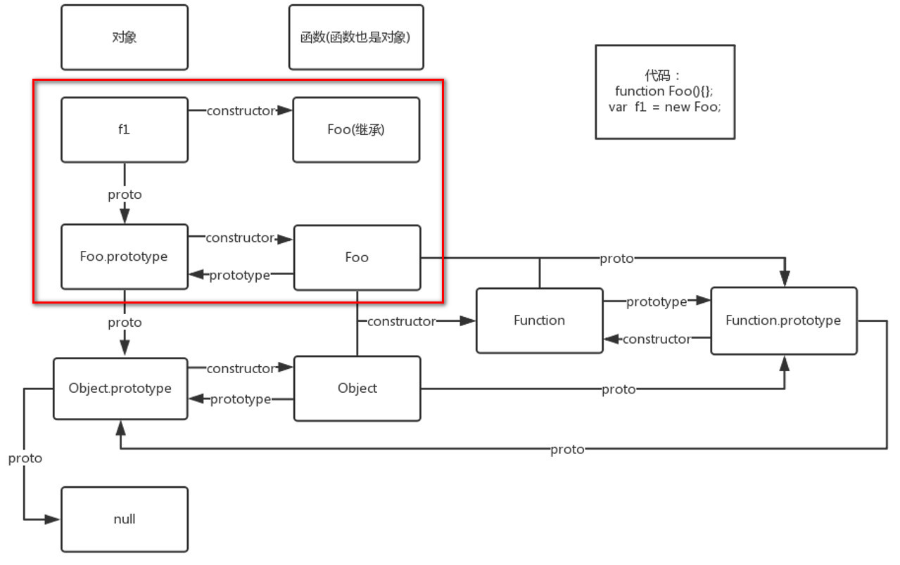
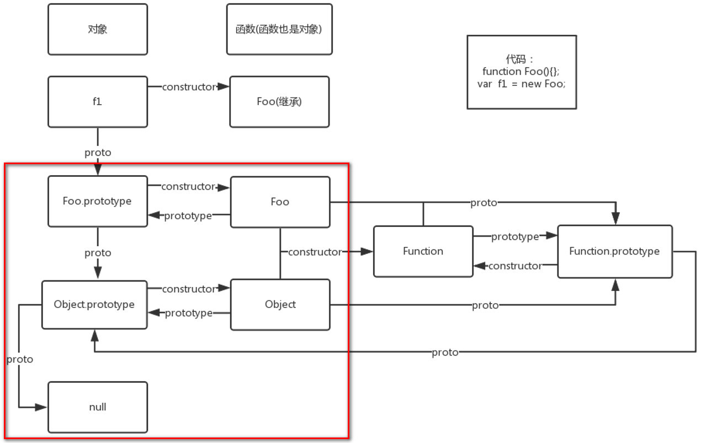
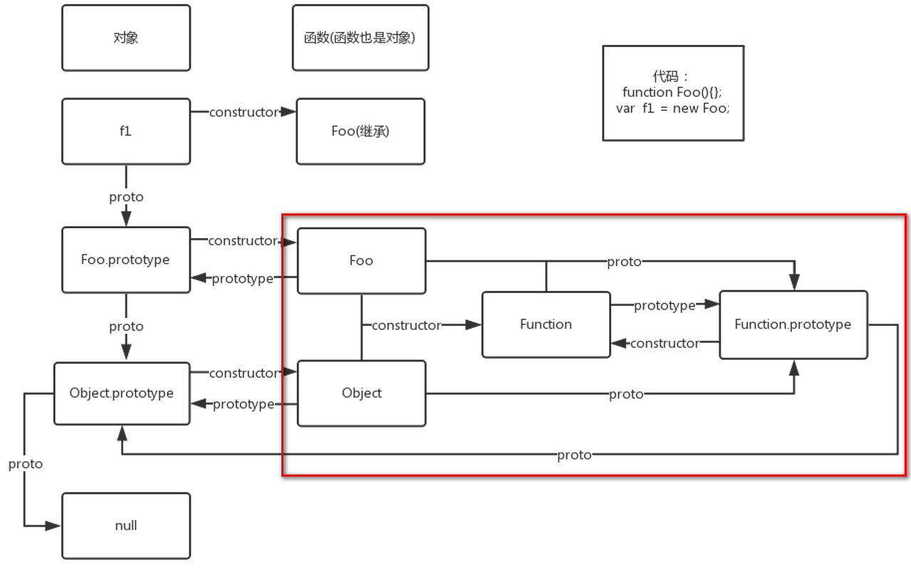

construtor的理解
所有对象都会从它的原型上继承一个 constructor 属性：
//object的原型是函数？
console.log(Object.constructor === Function)
console.log(Object instanceof Function)
var o = {};
console.log(o.constructor === Object);
var o = new Object;
console.log(o.constructor === Object); // true
var a = [];
console.log(a.constructor === Array); // true
var a = new Array;
console.log(a.constructor === Array); // true
var n = new Number(3);
console.log(n.constructor === Number); // true
var e = new Error();
console.log(e.constructor === Error);
prototype:原型
-
原型有一个constructor属性，指向该原型对应的构造函数
function Foo(){};
console.log(Foo.prototype.constructor === Foo);//true
-
由于实例可以继承原型的属性，所以实例也拥有constructor属性，同样指向原型对应的构造函数
function Foo(){};
var f1 = new Foo;
console.log(f1.constructor === Foo);//true
-
实例有一个proto属性，指向该实例对应的原型
function Foo(){};
var f1 = new Foo;
console.log(f1.__proto__ === Foo.prototype);//true
具体分析

-
实例f1是通过构造函数Foo()的new操作创建的。
构造函数Foo()的原型是Foo.prototype；
实例f1通过__proto__属性也指向原型Foo.prototype
function Foo(){};
var f1 = new Foo;
console.log(f1.__proto === Foo.prototype);//true
-
实例f1本身并没有constructor属性，但它可以继承原型Foo.prototype的constructor属性;
function Foo(){};
var f1 = new Foo();
console.log(Foo.prototype.constructor === Foo);//true
console.log(f1.constructor === Foo);//true
console.log(f1.hasOwnProperty('constructor'));//false

-
Foo.prototype是f1的原型，同时它也是实例。
实际上，任何对象都可以看做是通过Object()构造函数的new操作实例化的对象
所以，Foo.prototype作为实例，它的构造函数是Object()，原型是Object.prototype.
相应地，构造函数Object()的prototype属性指向原型对象Object.prototype；
实例对象Foo.prototype的proto属性同样指向原型对象Object.prototype
function Foo(){};
var f1 = new Foo;
console.log(Foo.prototype.__proto__ === Object.prototype);//true
-
实例Foo.prototype本身具有constructor属性，
所以它会覆盖继承自原型Object.prototype的constructor属性
function Foo(){};
var f1 = new Foo;
console.log(Foo.prototype.constructor === Foo);//true
console.log(Object.prototype.constructor === Object);//true
console.log(Foo.prototype.hasOwnProperty('constructor'));//true
-
如果Object.prototype作为实例对象的话，其原型是什么，结果是null。私以为，
这可能也是typeof null的结果是'object'的原因之一吧
console.log(Object.prototype.__proto__ === null);//true

-
前面已经介绍过，函数也是对象，只不过是具有特殊功能的对象而已。
任何函数都可以看做是通过Function()构造函数的new操作实例化的结果
如果把函数Foo当成实例对象的话，其构造函数是Function()，
其原型对象是Function.prototype；类似地，函数Object的构造函数也是Function()，
其原型对象是Function.prototype
function Foo(){};
var f1 = new Foo;
console.log(Foo.__proto__ === Function.prototype);//true
console.log(Object.__proto__ === Function.prototype);//true
-
原型对象Function.prototype的constructor属性指向构造函数Function() ;
实例对象Object和Foo本身没有constructor属性，
需要继承原型对象Function.prototype的constructor属性.
function Foo(){};
var f1 = new Foo;
console.log(Function.prototype.constructor === Function);//true
console.log(Foo.constructor === Function);//true
console.log(Foo.hasOwnProperty('constructor'));//false
console.log(Object.constructor === Function);//true
console.log(Object.hasOwnProperty('constructor'));//false
-
所有的函数都可以看成是构造函数Function()的new操作的实例化对象。
那么，Function可以看成是调用其自身的new操作的实例化的结果
所以，如果Function作为实例对象，其构造函数是Function，其原型对象是Function.prototype
console.log(Function.__proto__ === Function.prototype);//true
console.log(Function.prototype.constructor === Function);//true
console.log(Function.prototype === Function.prototype);//true
-
如果Function.prototype作为实例对象的话，其原型对象是什么呢？
和前面一样，所有的对象都可以看成是Object()构造函数的new操作的实例化结果。
所以，Function.prototype的原型对象是Object.prototype，其原型函数是Object().
console.log(Function.prototype.__proto__ === Object.prototype);//true